Next: Restrictor, Enlargement Up: Fluid Section Types: Gases Previous: Rotating Gas Pipe (subsonic Contents
Properties: adiabatic, not isentropic, symmetric,  inlet based restrictor
inlet based restrictor
Restrictors are discontinuous geometry changes in gas pipes. The loss factor
 can be defined based on the inlet conditions or the outlet
conditions. Focusing on the h-s-diagram (entalpy vs. entropy) Figure (95), the inlet conditions are
denoted by the subscript 1, the outlet conditions by the subscript 2. The
entropy loss from state 1 to state 2 is 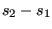. The process is assumed to
be adiabatic, i.e.
can be defined based on the inlet conditions or the outlet
conditions. Focusing on the h-s-diagram (entalpy vs. entropy) Figure (95), the inlet conditions are
denoted by the subscript 1, the outlet conditions by the subscript 2. The
entropy loss from state 1 to state 2 is 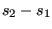. The process is assumed to
be adiabatic, i.e.
 , and the same relationship applies to the
total entalpy
, and the same relationship applies to the
total entalpy  , denoted by a dashed line in the Figure.
, denoted by a dashed line in the Figure.  denotes the
kinetic energy part of the entalpy 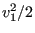, the same applies to 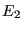. Now,
the loss coefficient
denotes the
kinetic energy part of the entalpy 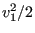, the same applies to 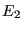. Now,
the loss coefficient  based on the inlet conditions is defined by
based on the inlet conditions is defined by
| 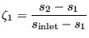 | (119) |
| (120) |
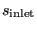 is the entropy for zero velocity and isobaric conditions at
the inlet, a similar definition applies to
. So, for
 the increase in entropy is compared with the maximum entropy
increase from state 1 at isobaric conditions. Now we have
the increase in entropy is compared with the maximum entropy
increase from state 1 at isobaric conditions. Now we have  and
and
 consequently,
consequently,
| 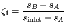 | (121) |
and based on the outlet conditions by
| 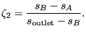 | (122) |
Using Equation (52) one obtains:
| (123) |
| (124) |
| 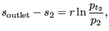 | (125) |
from which [73]
 |
(126) |
if  is defined with reference to the first section (e.g. for an
enlargement, a bend or an exit) and
is defined with reference to the first section (e.g. for an
enlargement, a bend or an exit) and
| 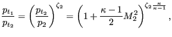 | (127) |
if  is defined with reference to the second section (e.g. for
a contraction).
is defined with reference to the second section (e.g. for
a contraction).
Using the general gas equation (38) finally leads to (for
 ):
):
| 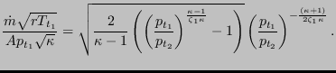 | (128) |
This equation reaches critical conditions (choking,  ) for
) for
| 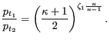 | (129) |
Similar considerations apply to 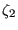.
Restrictors can be applied to incompressible fluids as well by specifying the parameter LIQUID on the *FLUID SECTION card. In that case the pressure losses amount to
 |
(130) |
and
 |
(131) |
respectively.
A long orifice is a substantial reduction of the cross section of the pipe over a significant distance (Figure 96).
There are two types: TYPE=RESTRICTOR LONG ORIFICE IDELCHIK with loss coefficients according to [34] and TYPE=RESTRICTOR LONG ORIFICE LICHTAROWICZ with coefficients taken from [45]. In both cases the long orifice is described by the following constants (to be specified in that order on the line beneath the *FLUID SECTION, TYPE=RESTRICTOR LONG ORIFICE IDELCHIK or TYPE=RESTRICTOR LONG ORIFICE LICHTAROWICZ card):
A restrictor of type long orifice MUST be preceded by a restrictor of type
user with 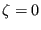. This accounts for the reduction of cross section from
 to
to  .
.
By specifying the parameter LIQUID on the *FLUID SECTION card the loss is calculated for liquids. In the absence of this parameter, compressible losses are calculated.
Example files: restrictor, restrictor-oil.